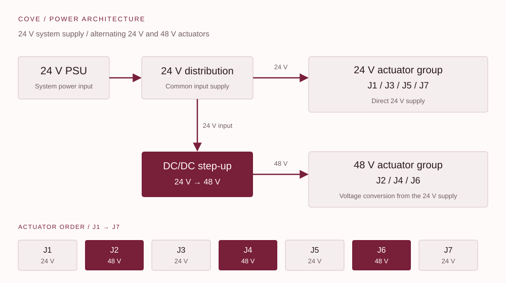
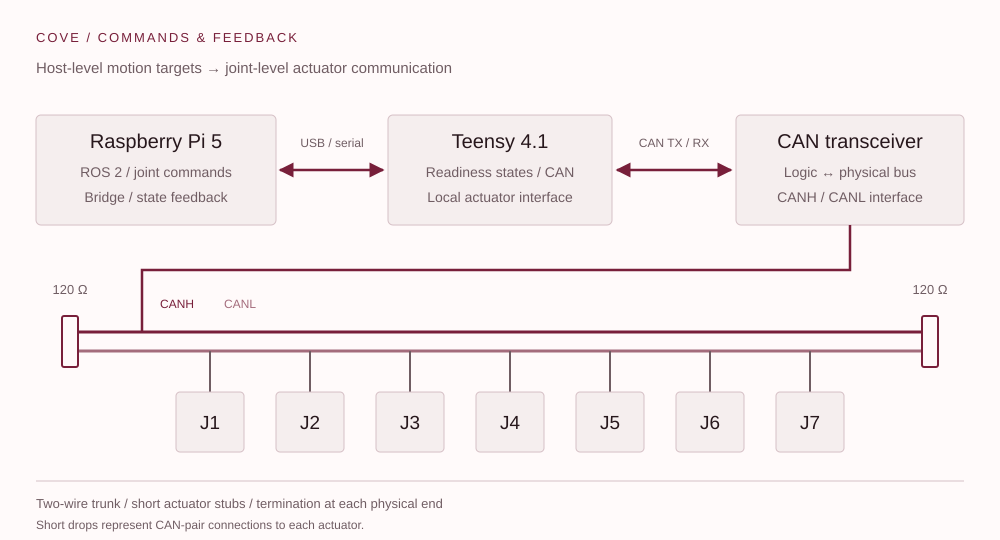
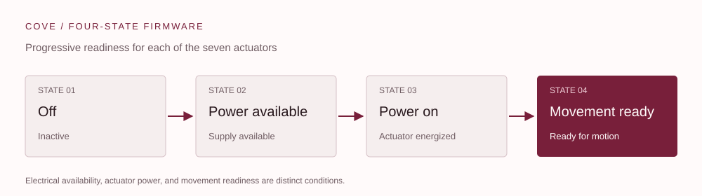
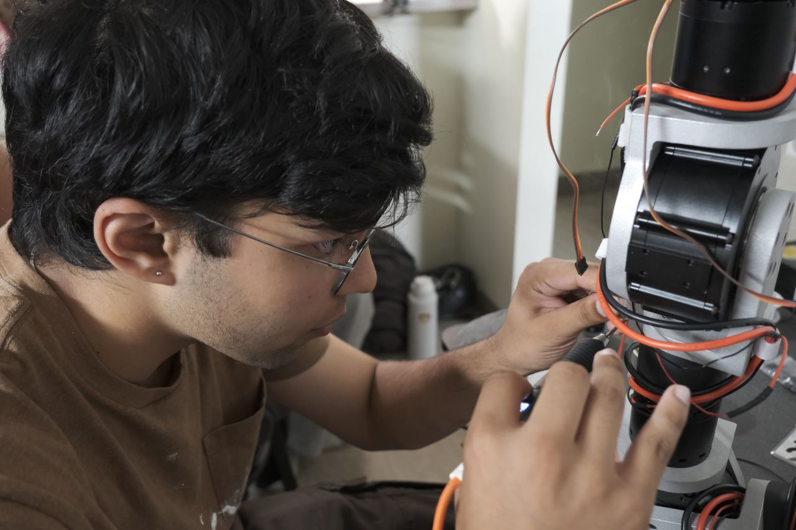

01 / Electrical architecture
Power distribution & CAN control.

I designed the power distribution around a 24 V system supply and seven actuators with alternating voltage ratings:
- 24 V actuators: J1, J3, J5, and J7 use the system’s 24 V supply.
- 48 V actuators: J2, J4, and J6 use DC/DC step-up conversion from the 24 V supply. Local voltage conversion accommodates both actuator ratings within one power-distribution architecture.
- Control: Pi / ROS 2 ↔ USB serial ↔ Teensy ↔ CAN transceiver ↔ J1–J7. The CANH/CANL twisted-pair trunk uses short stubs and two 120 Ω terminations, one at each physical end.
CAN topology

02 / Four-state firmware
Separate power from motion readiness.
I designed four actuator states: Off, Power available, Power on, and Movement ready. Separating supply availability, energization, and motion readiness added redundancy and made startup faults easier to isolate.

The Teensy connects the ROS 2 command interface to the actuator CAN network. The four-state system makes electrical availability, actuator power, and movement readiness separate steps during bring-up.
03 / PSU vs. battery
External power for the bottle-holding task.
We chose a PSU because the power required to hold a bottle of water was very low in our use case. External power also avoided onboard battery charging and management hardware.
The system runs on 24 V, with step-up conversion supplying the three 48 V actuators. A common input voltage simplifies distribution while the converters supply the voltage each actuator group requires.
Electrical power follows P = V · I. The voltage increase is 2:1; converter input current accounts for the 48 V load power and conversion losses. This makes converter efficiency part of the 24 V supply’s load budget.
04 / Motion
Seven actuators, integrated with ROS 2.
I routed the harness to accommodate all seven degrees of freedom and connected the actuator network to the ROS 2 software team. The Pi supplies joint-level targets; the Teensy handles actuator communication and returns feedback.
As the team’s only electrical engineer, I brought in a mechanical teammate to help with soldering, crimping, and harness assembly. We achieved motion across all seven actuators within the ten-week build.
